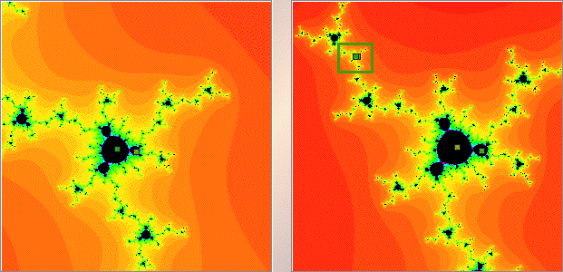

Julia Sets and the Mandelbrot Set
Sample 4

The left window shows the magnification of the
green box
in the right window.
The apparent 2 points now are well-separated.
Altogether, the cycle consists of 10 points.
Return to
Samples
.